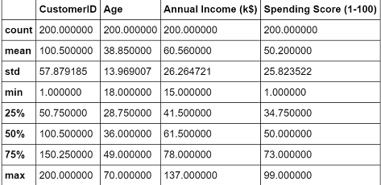

K-Mean Clustering¶
Pengertian K-Mean Clustering¶
K**-means Clustering** adalah salah satu “unsupervised machine learning algorithms” yang paling sederhana dan populer .Tujuan dari algoritma ini adalah untuk menemukan grup dalam data, dengan jumlah grup yang diwakili oleh variabel K. Variabel K sendiri adalah jumlah cluster yang kita inginkan
Untuk memproses data algoritma K-means Clustering , data dimulai dengan kelompok pertama centroid yang dipilih secara acak, yang digunakan sebagai titik awal untuk setiap cluster, dan kemudian melakukan perhitungan berulang (berulang) untuk mengoptimalkan posisi centroid.Proses ini berhenti atau telah selesai dalam mengoptimalkan cluster ketika:
- Centroid telah stabil — tidak ada perubahan dalam nilai-nilai mereka karena pengelompokan telah berhasil.
- Jumlah iterasi yang ditentukan telah tercapai.
Hasil dari K-Mean Clustering adalah:¶
- Centroid dari cluster K, yang dapat digunakan untuk memberi label data baru
- Label untuk data pelatihan (setiap titik data ditugaskan ke satu clusters)
Agoritma K-Mean Clustering¶
- Menentukan secara acak K titik data sebagai pusat cluster yang disebut centroid.
- Menandai masing masing x_i masuk ke ke cluster tertentu, dengan cara menghitung jarak x_i ke masing masing pusat cluster (centroid) dan memasukkan x_i anggota pusat cluster tertentu tersebut jika memiliki jarak terdekat dengan rumus euclidian distance :
- Menentukan pusat cluster baru dengan menghitungya rata rata dari anggota cluster
- Ulangai langkah 2 dan 3 sampai tidak tidak ada dari anggota setiap cluster berubah tempat kelompoknya
Contoh data :
Langkah 1:
Ininialisasi: Secara acak dipilih dua centroid (k=2) untuk 2 cluster .
Misal 2 centroid adalah: m1=(1.0,1.0) and m2=(5.0,7.0).
Langkah 2:
•Sehingga, Kita dapatkan dua cluster dengan anggotanya:
{1,2,3} and {4,5,6,7}.

•Centroid baru adalah:
Langkah 3:
•Sekarang kita gunakan centroid baru ini untuk menghitung jarak euclidian dari masing masing objek
•Sehingga dapatkan cluster baru yaitu:
{1,2} and {3,4,5,6,7}
•Centroid berikutnya adalah yaitu: m1=(1.25,1.5) dan m2 = (3.9,5.1)
Langkah 4:
•Cluster baru diperoleh diperoleh dengan masing masing anggotanya yaitu:
{1,2} dan {3,4,5,6,7}
•Selanjutnya , karena tidak ada perubahan anggota dari cluster.
•Sehingga hasil akhir dari 2 cluster adalah {1,2} dan {3,4,5,6,7}.
Visualisasi data :
Implementasi K-Mean Clustering pada python¶
hal yang diperlukan dalam pengimplementasian
- python 3.6
- download data pada laman berikut https://github.com/BULLZHIT/data/tree/master/k%20mean
pip yang harus di install
- numpy library
pip install numpy- Pandas library
pip install pandasAlgoritma K-Mean Clustering pada python¶
setelah syarat terpunuhi kita dapat memulai pada langkah selanjutnya
import dataset dan mengambil data pada dataset
dataset=pd.read_csv('crredit.csv')
dataset.describe()
data yang digunakan pendapatan dan rating_pengeluaran
X = dataset.iloc[:, [3, 4]].valuessekerang X adalah bentuk dua matriks (200,2)
Langkah selanjutnya adalah memilih jumlah iterasi . Kita perlu mencoba banyak kemungkinan untuk menemukan jumlah iterasi optimal yang diperlukan untuk konvergensi. Tidak perlu memilih angka yang sangat besar karena katakanlah pada iterasi ke-100, jika centroid tiba di lokasi sebenarnya atau lokasi terbaik, bahkan setelah melakukan 1000 iterasi tambahan, algoritma akan memberikan hasil yang sama. Jadi untuk kenyamanan mari kita mulai dengan memilih jumlah iterasi sebanyak 100.
m=X.shape[0] #number of training examples
n=X.shape[1] #number of features. Here n=2
n_iter=100Langkah berikutnya adalah memilih jumlah cluster K. kita ambil 5 sebagai K (jumlah cluster)
K=5 # number of clustersLangkah 1: memilih centroid secara acak dari data:
Centroids=np.array([]).reshape(n,0) Centroid adalah matriks dimensi K, di mana setiap kolom akan menjadi centroid untuk satu kluster.
for i in range(K):
rand=rd.randint(0,m-1)
Centroids=np.c_[Centroids,X[rand]]Langkah 2.a: Untuk setiap data pada baris hitung jarak euclidian dari centroid dan mengelompokan sesuai cluster berdasarkan jarak minimal dari centroid
Output={}hitung jarak euclidian dari setiap titik data ke semua centroid dan mengelompokkannya dalam matriks m X K. Jadi setiap baris dalam matriks EuclidianDistance akan memiliki jarak titik data tertentu dari semua centroid. Selanjutnya, kita akan menemukan jarak minimum dan menyimpan indeks kolom dalam vektor C.
EuclidianDistance=np.array([]).reshape(m,0)
for k in range(K):
tempDist=np.sum((X-Centroids[:,k])**2,axis=1)
EuclidianDistance=np.c_[EuclidianDistance,tempDist]
C=np.argmin(EuclidianDistance,axis=1)+1Langkah 2.b: Kita perlu mengelompokkan kembali poin data berdasarkan indeks cluster C dan menyimpannya dalam variabel Output dan juga menghitung rata-rata cluster yang telah dikelompokkan dan menetapkannya sebagai centroid baru.
Y={}
for k in range(K):
Y[k+1]=np.array([]).reshape(2,0)
for i in range(m):
Y[C[i]]=np.c_[Y[C[i]],X[i]]
for k in range(K):
Y[k+1]=Y[k+1].T
for k in range(K):
Centroids[:,k]=np.mean(Y[k+1],axis=0)ulangi langkah 2 sampai konvergensi tercapai. Dengan kata lain, kita mengulang n_iter dan ulangi langkah 2.a dan 2.b seperti yang ditunjukkan sampai tidak ada perubahan data dalam setiap cluster:
for i in range(n_iter):
#step 2.a
EuclidianDistance=np.array([]).reshape(m,0)
for k in range(K):
tempDist=np.sum((X-Centroids[:,k])**2,axis=1)
EuclidianDistance=np.c_[EuclidianDistance,tempDist]
C=np.argmin(EuclidianDistance,axis=1)+1
#step 2.b
Y={}
for k in range(K):
Y[k+1]=np.array([]).reshape(2,0)
for i in range(m):
Y[C[i]]=np.c_[Y[C[i]],X[i]]
for k in range(K):
Y[k+1]=Y[k+1].T
for k in range(K):
Centroids[:,k]=np.mean(Y[k+1],axis=0)
Output=YVisualisasi Data¶
plt.scatter(X[:,0],X[:,1],c='black',label='unclustered data')
plt.xlabel('Income')
plt.ylabel('Number of transactions')
plt.legend()
plt.title('Plot of data points')
plt.show()mengelompokkan data berdasarkan cluster